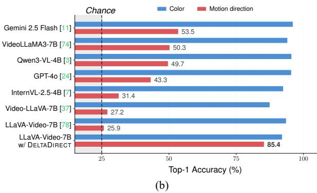

5 月 24 日：TC-JEPA 等视觉表征论文归档
本页按日期归档近期论文，保留优先级、主题、来源与方法线索，方便回看同一批工作的研究脉络。
先读 TC-JEPA。文本条件不是给 I-JEPA 加一个 caption 头，而是在降低 masked feature prediction 的多解性。 其余论文按 P1/P2 与主题顺序扫读，重点看方法图、消融设置和是否能迁移到通用视觉表征。
论文索引
 P1
P1
Text-Conditional JEPA for Learning Semantically Rich Visual Representations
视觉自监督和视觉语言预训练之间的边界被进一步打薄：它仍然预测 feature，不直接重建像素，也不完全依赖对比学习。
方法：caption-conditioned masked feature prediction with sparse cross-attention text conditioner
 P1
P1
Self-supervised Hierarchical Visual Reasoning with World Model
它把视频 SSL 的目标从重建下一帧推向重建“低层没有解释完的部分”。
方法：hierarchical residual world model for self-supervised visual foresight
 P1
P1
Cambrian-P: Pose-Grounded Video Understanding
用伪位姿把跨帧 token 固定到共享空间，是视频 VFM/MLLM 很值得跟的结构化监督。
方法：learnable camera tokens + pose regression head for frame-level grounding

P2Which Way Did It Move? Directional Motion Blindness in Video-LLMs
这类诊断比单纯刷视频 QA 更有价值，因为它定位了视觉表征到语言读出的断点。
方法：feature-delta motion vector objective at projector level
 P2
P2
GeoWeaver: Grounding Visual Tokens with Geometric Evidence before Scene Reasoning
这篇不是 JEPA，而是 VLM 视觉 token grounding：冻结几何编码器的证据被分配给多层视觉 token。
方法：multi-level geometry bank + residual grounding before LLM reasoning